MLF End Term17 questions46 marks7 MSQ · 6 SA · 4 MCQQPE1
Elapsed 00:00
Q1MCQ0 marks
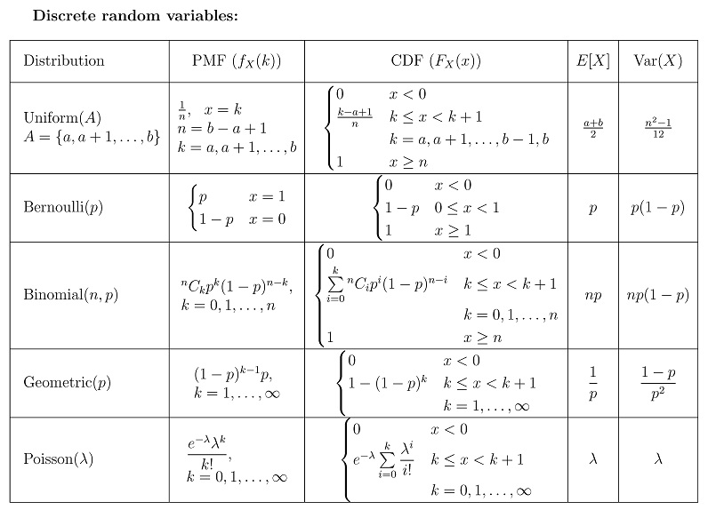
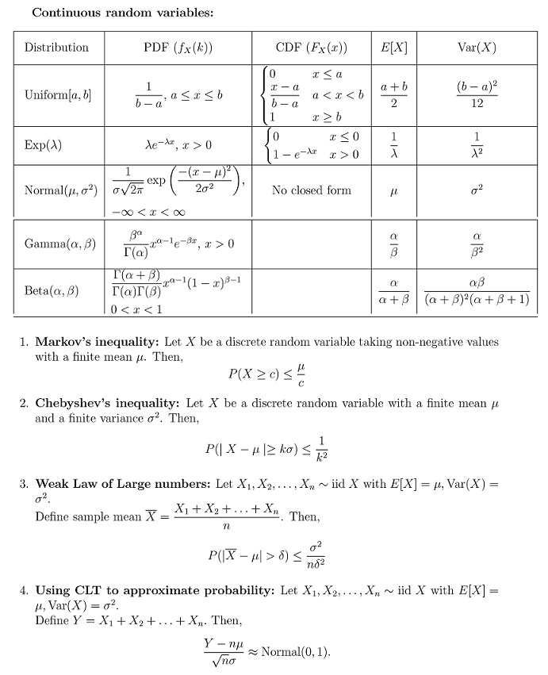
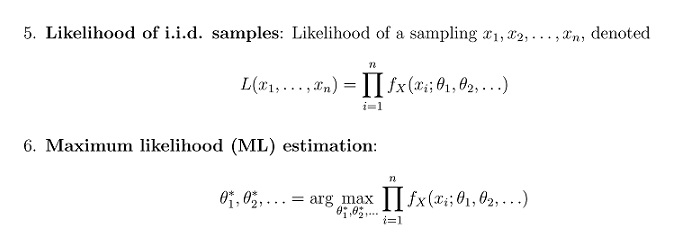
Useful Data has been mentioned above.
This data attachment is just for a reference & not for an evaluation.
Q2MSQ2 marksselect all that apply
Which of the following statements accurately describes the key difference between classification and regression models?
In classification, the output variable is continuous and real-valued, while inregression, it is categorical.
Regression models are used for predicting probabilities, whereas classificationmodels focus on predicting absolute values.
Classification models aim to find decision boundaries to separate data intoclasses, while regression models seek to predict a numeric value.
In regression, the commonly used loss function is mean squared error, whilein classification, 0 -1 loss is typically employed.
Comprehension passage - the questions below it refer to this
Based on the above data, answer the given subquestions.
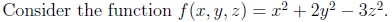
Q3SA2 marks
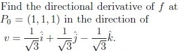
Q4SA1 mark
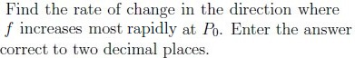
Q5MCQ3 marks
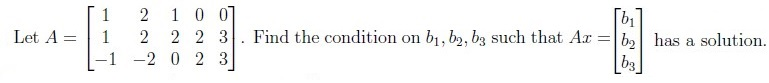
b1 − b2 + b3 = 0
b1 + b2 + b3 = 0
2b1 − b2 + b3 = 0
2b1 + b2 + b3 = 0
Q6MCQ3 marks
A consumer wants to maximize his utility subject to some constraints. He consumes two goods g1 and g2 and the utility function is the sum of g1 and g2. His budget is Rs.100. The per unit price of goods g1 and g2 are Rs.3 and Rs.4 respectively. Chose the correct optimization problem.
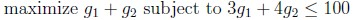
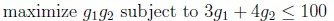
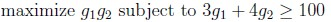
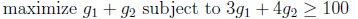
Q7MSQ4 marksselect all that apply
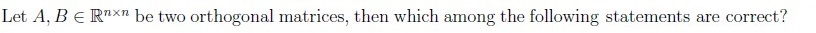
A − I (where I is the identity matrix of the same size) is also orthogonal.
Both AB and BA are orthogonal.
An and Bn are orthogonal for every n > 1.
A and B are also symmetric matrices.
Q8MSQ4 marksselect all that apply
Which of the following statements is/are true for a real symmetric matrix A?
AT A and AAT have the same rank.
AT A and AAT have the same eigenvalues
AT A and AAT have the same eigenvectors.
AT A and AAT have the same singular values.
Q9MSQ3 marksselect all that apply
Which of the following matrices is/are Unitary but not Hermitian?
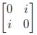
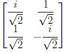
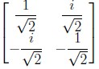
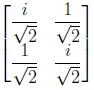
Q10MSQ3 marksselect all that apply
Which among the following is true for PCA?
The first principal component represents the direction along which thevariance of the dataset is maximized.
The first principal component represents the direction along which thevariance of the dataset is minimized.
The first principal component is the eigenvector corresponding to the smallesteigenvalue of the covariance matrix.
The first principal component is the eigenvector corresponding to the largesteigenvalue of the covariance matrix.
Q11MSQ3 marksselect all that apply
Which of the following statements regarding gradient descent is/are correct?
If the step size is chosen as 1, we may “not always” arrive as close to theoptimal solution even after many number of iterations.
Solution obtained for optimization problem is the local minimum of itsobjective function.
Solution obtained for optimization problem is the global minimum of itsobjective function.
Gradient descent converges to the global optimum in the case of convexfunctions.
Gradient descent does not converge to the global optimum in the case ofconvex functions.
Q12MSQ3 marksselect all that apply
Suppose a fair coin is tossed twice. Let A denote the event that the first toss is a tail. Let B denote the event that the second toss is a tail. Let C denote the event that out of the first two tosses, either both are heads or both are tails. Which among the following options are true? Select all that apply.
A, B and C are independent.
A, B and C are dependent.
A, B and C are pairwise independent.
P(A) = P(B) = P(C) = 1/2
Q13SA2 marks
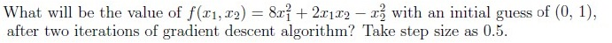
Q14SA3 marks
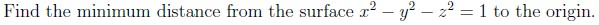
Q15SA3 marks
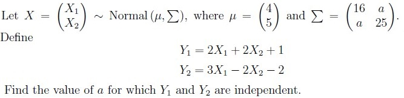
Q16SA3 marks
The average life (in years) of an electric bulb follows exponential distribution with parameter λ = 0.4. Using Weak Law of large numbers, find a lower bound on the probability that the mean life of a random sample of 50 such bulbs falls between 1.5 and 3.5 years. Enter your answer correct to three decimal places.
Auto-generated summary from the source site. Handy as a checklist; the lessons above explain each idea from scratch.
Here’s a structured summary of core topics, concepts, principles, and equations essential for the exam, followed by Mermaid knowledge graphs to visualize relationships.
1. Core Topics & Concepts
A. Machine Learning Foundations
1. Classification vs. Regression
Classification:
Output: Categorical (discrete classes).
Goal: Find decision boundaries to separate classes.
Loss functions: 0-1 loss, cross-entropy, log loss.
Regression:
Output: Continuous (real-valued).
Goal: Predict a numeric value.
Loss functions: Mean Squared Error (MSE), Mean Absolute Error (MAE).
2. Principal Component Analysis (PCA)
First Principal Component (PC1):
Direction of maximum variance in data.
Eigenvector of the covariance matrix with the largest eigenvalue.
Subsequent PCs:
Orthogonal to previous PCs, capturing decreasing variance.
3. Gradient Descent (GD)
Update Rule:
θnew=θold−η∇J(θ)
where:
η: Learning rate (step size).
∇J(θ): Gradient of the loss function.
Convergence:
Convex functions: GD converges to global optimum.
Non-convex functions: May converge to local minima.
Challenges:
If η is too large → divergence.
If η is too small → slow convergence.
4. Optimization Problems
Linear Programming (LP):
Minimize/maximize a linear objective subject to linear constraints.
Karush-Kuhn-Tucker (KKT) Conditions:
Necessary for optimality in constrained optimization.
Conditions:
Stationarity: ∇f(x)+∑λi∇gi(x)=0.
Primal Feasibility: gi(x)≤0.
Dual Feasibility: λi≥0.
Complementary Slackness: λigi(x)=0.
B. Probability & Statistics
1. Probability Distributions
Distribution
PMF/PDF
Expectation E[X]
Variance Var(X)
Uniform (Discrete)
fX(k)=n1 for k=a,a+1,…,b
2a+b
12n2−1
Bernoulli
fX(k)=pk(1−p)1−k for k∈{0,1}
p
p(1−p)
Exponential
fX(x)=λe−λx
λ1
λ21
2. Independence of Events
Pairwise Independence: P(A∩B)=P(A)P(B).
Mutual Independence: P(A∩B∩C)=P(A)P(B)P(C).
Example: Coin tosses (Q13) show pairwise independence but not mutual independence.
3. Weak Law of Large Numbers (WLLN)
Statement:
n→∞limP(n1i=1∑nXi−μ≥ϵ)=0
Application: Estimating sample mean convergence to true mean.
4. Multivariate Normal Distribution
Covariance Matrix (Σ):
Σ=(σ12ρσ1σ2ρσ1σ2σ22)
Independence Condition:
If Y1 and Y2 are linear combinations of X1,X2, they are independent iff their covariance is zero.
C. Linear Algebra
1. Orthogonal Matrices
Properties:
ATA=I (and AAT=I).
det(A)=±1.
Product of orthogonal matrices is orthogonal.
Not necessarily symmetric (unless A=AT).
2. Symmetric Matrices
Properties:
A=AT.
Eigenvalues: Real.
Eigenvectors: Orthogonal.
ATA and AAT have:
Same eigenvalues.
Same singular values.
Same rank.
3. Unitary Matrices
Definition: UHU=I (where UH is the conjugate transpose).
Hermitian Matrices: A=AH (not all unitary matrices are Hermitian).
4. Solving Linear Systems
Condition for Solution Existence:
For Ax=b, a solution exists iffb is in the column space of A.
Example (Q6): 2b1−b2+b3=0.
D. Calculus & Optimization
1. Directional Derivative
Formula:
Dvf(p)=∇f(p)⋅v
where v is a unit vector.
Maximum Rate of Change:
Occurs in the direction of ∇f.
Magnitude: ∥∇f∥.
2. Gradient Descent Example (Q14)
Function: f(x1,x2)=8x12+2x1x2−x22.
Gradient:
∇f=(16x1+2x22x1−2x2)
Update Rule:
xnew=xold−η∇f(xold)
3. Distance Minimization (Q15)
Problem: Minimize distance from origin to x2−y2−z2=1.
Solution: Use Lagrange multipliers or recognize it as a hyperboloid with minimum distance 1.